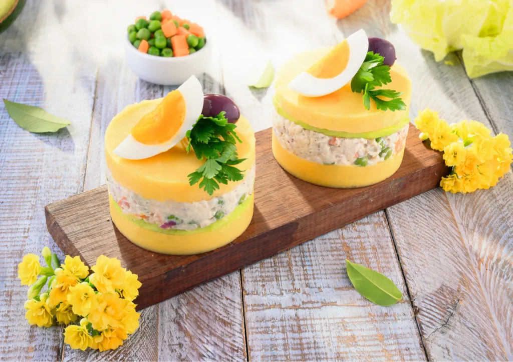
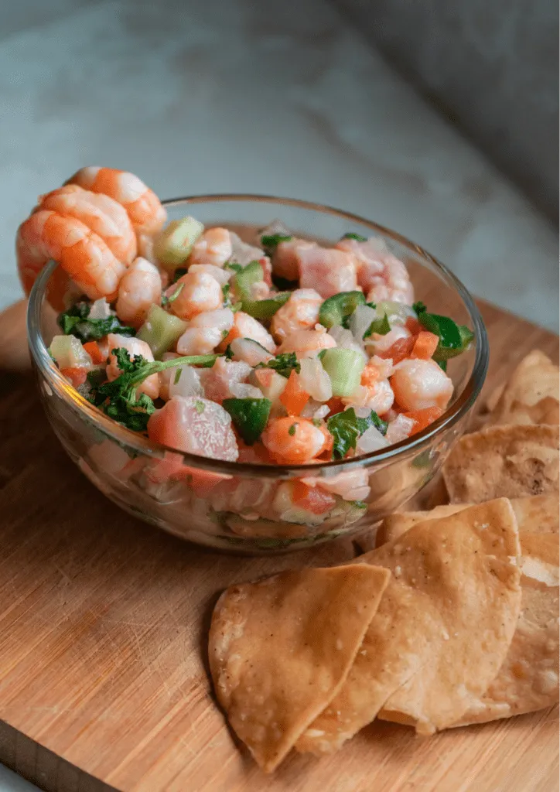
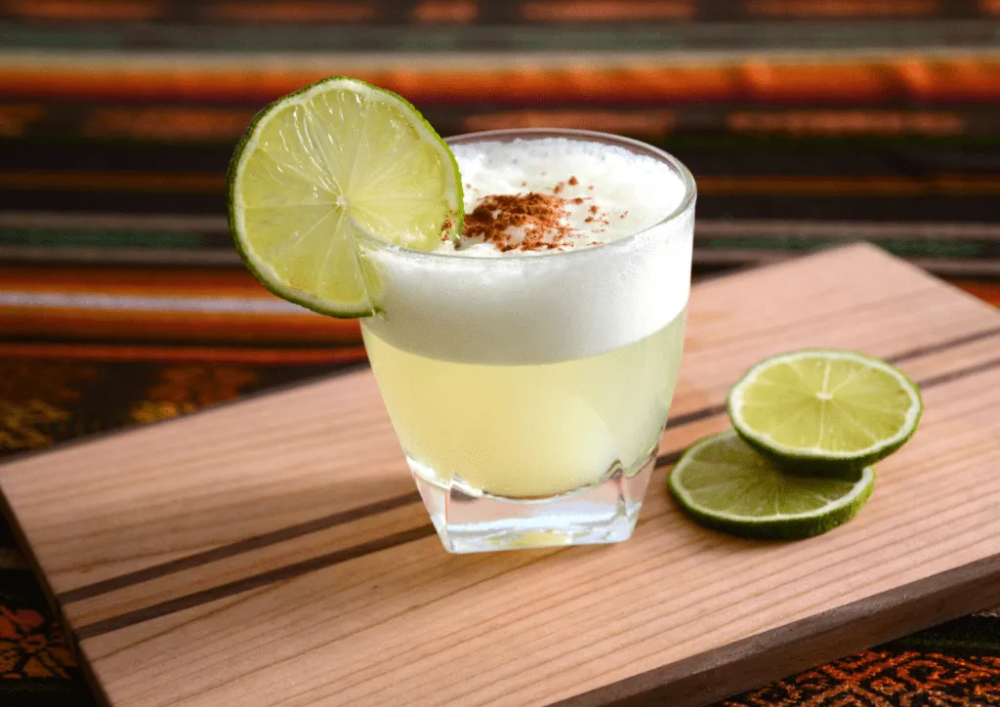

Comidas Típicas do Peru


Causa Limeña
Um “escondidinho” de batata recheado com frango ou atum bem temperados, servido gelado.

Ceviche
Um prato de filés de peixe cru marinados em uma mistura que chamam de leche de tigre: limão, sal, alho, cebola roxa, e pimenta.

Pisco Sour
Uma bebida feita com Pisco, limão, clara de ovo, gengibre e mais.